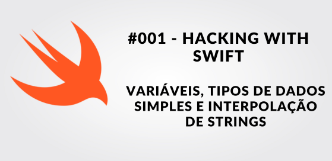
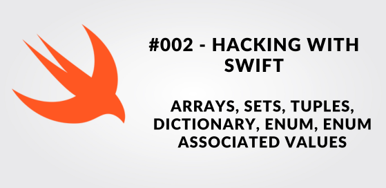
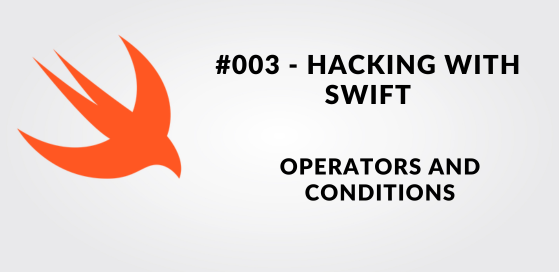
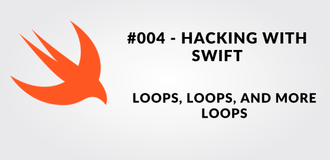
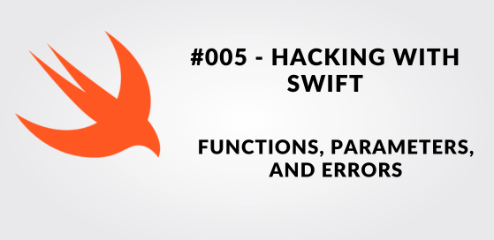
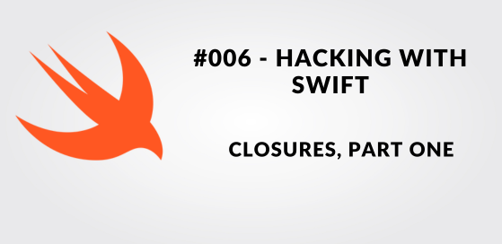
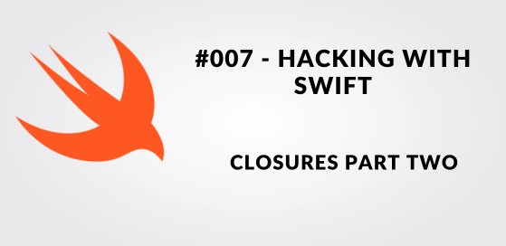
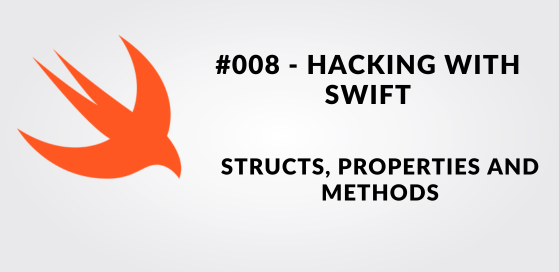
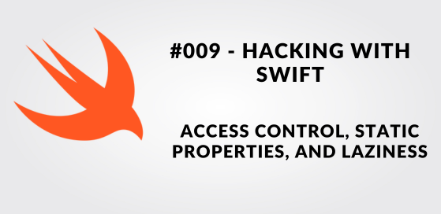

Programação com Swift04 Setembro 2023

Programação com Swift05 Setembro 2023

Programação com Swift08 Setembro 2023

Programação com Swift11 Setembro 2023

Programação com Swift12 Setembro 2023

Programação com Swift13 Setembro 2023

Programação com Swift14 Setembro 2023

Programação com Swift15 Setembro 2023

Programação com Swift18 Setembro 2023